Your global business community, built as one platform.
Everything about the Expats in Business (EiB) platform: what it is, every feature, how it is built, how it was tested and how it goes live. Read it first, then open the real product.
For Expats in Business · Ziyan Sinnen · the development team Edition {{date}} Status Private and proprietary. All rights reserved.
Kraków · Warsaw · the world
Start here
Contents
One document for three readers. Sections 1 to 13 are written in plain language. Sections 14 to 18 are more technical, for developers and reviewers.
01Summary in one page
02The idea: one product, many chapters
03Who uses it, and what each role can do
04Sessions, tickets and check-in
05Festivals
06Community: profiles, groups, Bubbles
07Providers and businesses
08Guides and the AI concierge
09Dashboard and Landing Roadmap
10Growth: chapters, ambassadors, careers
11Membership and the business model
12The Team page and the admin centre
13Languages, SEO, privacy and brand
14Architecture and tech stack
15Data model and permissions
16Security
17Testing and quality results
18Deployment, roadmap, open decisions
How to use this guide
EiB team
Read sections 1 to 13 to see what members, providers and admins get. Every screenshot is the real product with fictional demo data.
Ziyan and stakeholders
Sections 1, 2, 11 and 18 give the vision, the business model and the decisions only EiB can make.
Developers
Sections 14 to 18 and the appendices explain the architecture, the rules every change follows, the tests and how to run it.
About the data you see. People, companies, venues, prices and numbers in screenshots are demo data and are labelled as such in the product. Real company facts come only from docs/FACTS.md; everything else is a labelled placeholder until EiB confirms it.
Expats in Business · platform guide2
01 · Summary
The platform in one page
Expats in Business (EiB) is a free, community-run business network for internationals, founded in Kraków in 2024. This platform replaces the old portal with one product that works for every city.
{{pages}}pages, in 3 languages
{{actions}}audited server actions
{{models}}data models
{{loc}}lines of TypeScript
What members get
Sessions: RSVP, waitlist, QR tickets, calendar files
Profiles, a directory, opt-in connections and Bubbles on a world map
Coffee Roulette: a weekly introduction to someone new
Guides with official sources and an AI concierge that answers only from them
A personal 30/60/90-day roadmap
What EiB gets
A command centre with KPIs, charts and an audit log
Session and festival builders, check-in, live numbers
Verification, moderation and application boards
A Team page, feature flags and catalogs edited without a developer or a deploy
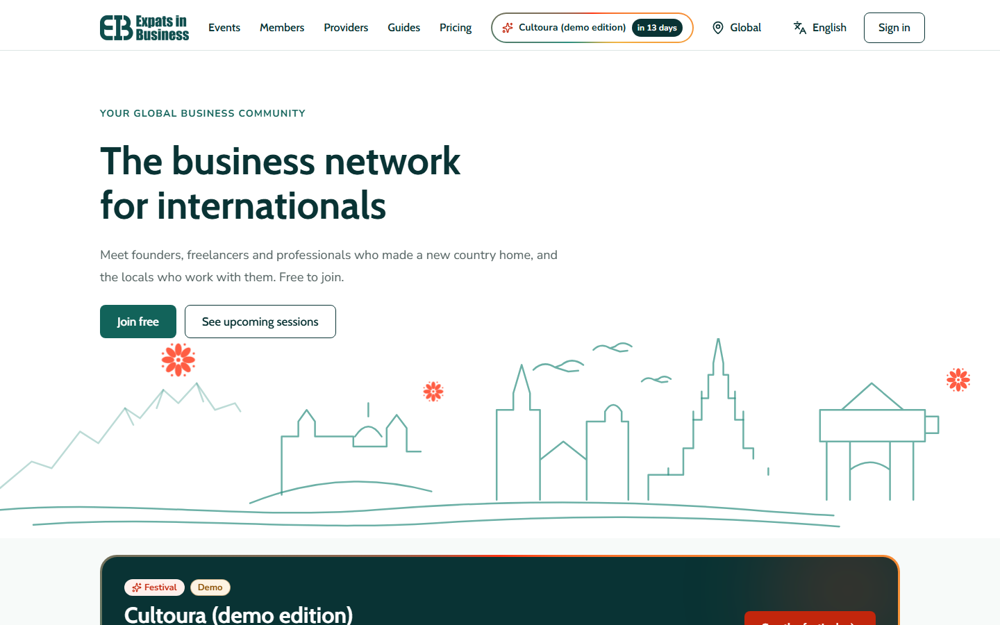
The home page (1440 px wide).
Where it stands
Area
Status
Features
Complete for V1 all 16 planned milestones plus the Team page
Quality
Tested {{unit}} unit tests, {{e2e_desktop}} browser tests, a {{crawl_pages}}-page link crawl, security probes (section 17)
Payments
Test mode only no real money until prices, entity and refund policy are decided
Content
Placeholders prices, partners, festival dates and legal text need EiB and a lawyer
Hosting
Ready to deploy free path documented step by step (section 18)
Expats in Business · platform guide3
02 · The idea
One product, many chapters
EiB is built as one global product organised into chapters, instead of one website per city. A new city is configuration, not a new project.
Global · the whole network, brand, corporate partners, concierge, guides
Country hub · Poland first: country guides, country ambassadors, local rules
City chapter · Kraków is chapter #1 (live); Warsaw is launching; each has its own sessions, venues, lead and time zone
Cultural Bubbles · groups by country of origin, each with a Bubble Lead, that cut across every chapter
Why this matters
Nothing is hard-coded
City names, currency, time zone and language come from the chapter's configuration. Opening Warsaw or Berlin needs data, not new code.
Free to belong
Joining, the directory, Bubbles, guides and free sessions stay free. Money comes from businesses, providers, employers and sponsors who gain commercial value (section 11).
Real, not decoration
Every button either works or is not shown as a button. No page ships empty: each has seed data or a designed empty state with a next action.
The real EiB facts this build relies on
Fact
Source
Founded in Kraków in 2024; co-founded by Ziyan Sinnen ("Zee"); first anniversary 27 Mar 2025
City of Kraków announcement
Session formats: Connect & Collaborate, Guest Speaker, Cultural Exchange, Virtual Connect, Business Development
EiB contributors FAQ
35+ sessions held (the 35th on 22 Jan 2026)
EiB YouTube community posts
Cultoura cultural-exchange series (Cultoura 2025, 24 May 2025)
expatsinbusiness.org
The community is free; a paid "EiB Business" module is planned
EiB contributors FAQ
Still to confirm with Ziyan before public use: current member count, legal entity, regular meeting day and partner-logo permissions.
Expats in Business · platform guide4
03 · People and permissions
Who uses it, and what each role can do
Permissions are checked on the server for every action and re-checked against the database. Hidden buttons are never the only protection.
Role
Can do
Scope
Visitor
Browse events, festivals, chapters, guides, providers, the Team page; see limited profile fields; ask the concierge; read legal pages
Public
Member
Everything above plus RSVP and tickets, profile, directory, connections, groups, Coffee Roulette, roadmap, notifications, data export and deletion
Own account
Bubble lead
Moderate and feature their Bubble's group
One Bubble
Moderator
Review reports, remove posts, decisions are audited
Assigned groups
Chapter lead
Build and publish sessions and festivals, scan check-in, run Pulse, review applications, see chapter analytics
Own chapter
Admin
Everything, everywhere: members, roles, providers, catalogs, settings, flags, Team page, audit log, system
Global
Ambassador
Public title and listing for global, country or city programme; no admin powers
Community
Provider
Inbox for quote requests, analytics, public verified listing (after verification)
Own listing
Sponsor
A private, signed report link with registered and checked-in numbers and countries of origin (any number under 5 is hidden)
Listing and lead inbox; verification badge, quotes and analytics; seats for employers. Prices are proposals, not approved.
Why this is safe. Every Server Action follows one pipeline: require a role or entitlement, validate with Zod, check the permission against the database, write, record an audit entry for admin actions, then refresh the cache. A rate limit applies to every account-level write.
Expats in Business · platform guide5
04 · Sessions
Sessions, tickets and check-in
From "what is on?" to a QR code at the door, the old portal's main failure (buttons that did nothing) is designed out.
The events list with filters by time and format.
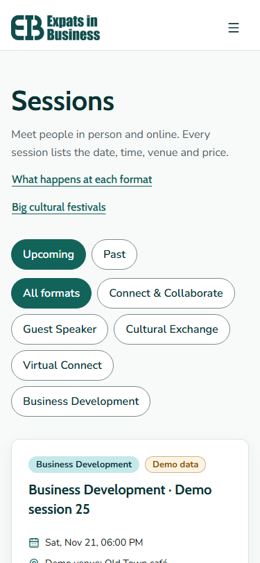
For members
Filter by time and format; every event shows date, time, venue, price and places left
RSVP and un-RSVP in one click from the event page
Full session? Join the waitlist; when someone cancels the next person is promoted automatically and told
A QR ticket for the door, plus a calendar file (.ics)
Paid sessions: Stripe Checkout in test mode with card, BLIK and Przelewy24; a held place expires if unpaid
For chapter leads
Event builder: publish a session in under two minutes (checked by a test)
Door check-in: QR scanner or manual search; a ticket works once
Session Pulse: a live screen of arrivals, streamed to the room
Who I met: attendees opt in, request, and contact details appear only after the other person accepts
A capacity rule protects the last place: RSVPs for one event are serialised with a database row lock, so two people can never both get the final seat.
Expats in Business · platform guide6
05 · Festivals
Festivals: big cultural events
Cultoura-style events need more than a session: ticket tiers, a programme, volunteers, stalls and partners. They get their own console and page.
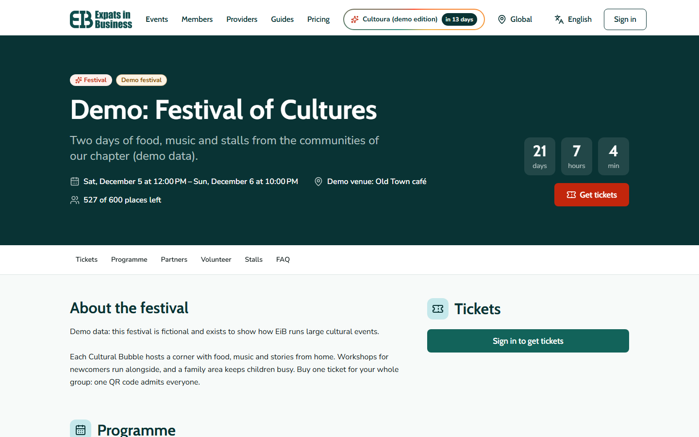
A festival page (demo data): tiers, programme, volunteering and stalls.
Tickets
Tiers (early bird, standard, family, supporter), group orders, a QR per group ("Admits 3 people"), capacity per tier.
Volunteers and stalls
Members sign up for shifts; vendors apply for stalls; organisers review them in a board and applicants are told.
Partners and reports
Partner logos only with permission; a signed sponsor report with registered and checked-in counts. Numbers under 5 are hidden.
Organiser console
Create a festival, add programme items, tiers, shifts and FAQ, then publish. A site-wide spotlight pill in the header ("Cultoura, in 13 days") points to the next festival. Everything an organiser changes refreshes the public page straight away.
Expats in Business · platform guide7
06 · Community
Community: profiles, groups and Bubbles
The Bubbles map: each country is a link; a list is always offered as an alternative.
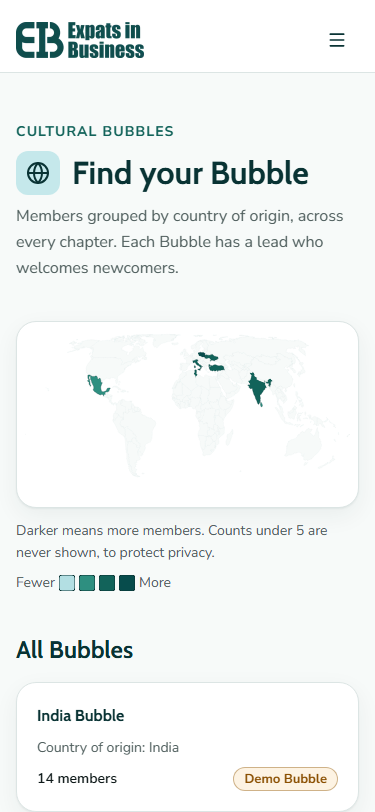
Profiles and directory
Members choose, field by field, what visitors and members see; the email is never shown publicly
A directory with filters that stay in the URL
Double opt-in connections: contact details only after acceptance
Groups and moderation
Chapter groups and Bubble groups for members only: posts, questions, announcements, reactions, pinned posts
Reports go to a moderation queue; every decision is applied and written to the audit log
Posting is rate-limited per account
Cultural Bubbles
Groups by country of origin, with a Bubble Lead. The map is drawn with d3-geo as plain SVG, so no map-tile service or tracking is involved. An admin can switch the map off with a feature flag and the page falls back to the list, no deploy needed.
Coffee Roulette
A weekly, opt-in match with another member. Plus members get priority. The weekly job is idempotent: running it twice never sends two matches.
All demo geography (such as India and Indore) is flagged isDemo and labelled on screen.
A public, filterable directory with categories and reviews
A verified badge only after an admin approves with every criterion ticked; the criteria are public
Quote requests go to a provider inbox; the provider replies, the member can then review (reviews are only open to people who really requested)
Analytics are aggregated; anything under 5 is hidden
Businesses
Members list their business; listings can be featured in their Bubble (Business plan)
A lead inbox collects enquiries
Reviews and verification requests are rate-limited against spam
The concierge hands off questions it cannot answer from the guides, and points to verified providers where relevant.
Expats in Business · platform guide9
08 · Knowledge
Guides and the AI concierge
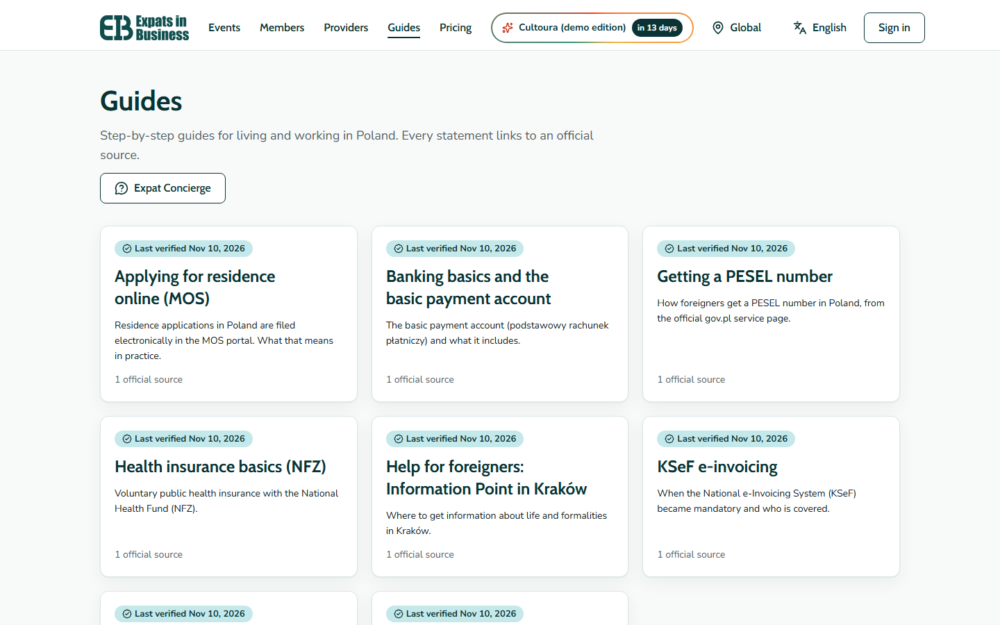
Guides, each with official sources and a "last verified" date.The Expat Concierge: suggestions and a privacy notice.
The rule: no source, no answer
Every legal, tax or immigration statement in a guide must cite an official source and carry a lastVerified date. The concierge may only answer from those guides, and must cite them. If it cannot ground an answer, it hands the person to a human instead of guessing.
1 Question Rate-limited; personal details removed before processing
→
2 Retrieve Top 5 guide passages by vector similarity, keyword fallback
→
3 Prompt Only the question and the passages, never personal data
→
4 Gate Every sentence must cite and be grounded, or it becomes a hand-off
→
5 Stream Answer with sources
Works offline
Without an API key, a built-in demo provider answers from the same guides, so a demo never depends on the internet. Real providers (Groq, Gemini, OpenRouter, Anthropic) plug in through one file.
Budgets
Free members get 10 questions a day; Plus is unlimited. A global daily budget caps cost; beyond it the offline adapter answers.
Expats in Business · platform guide10
09 · Member home
Dashboard and Landing Roadmap
The member dashboard: every card is a link.
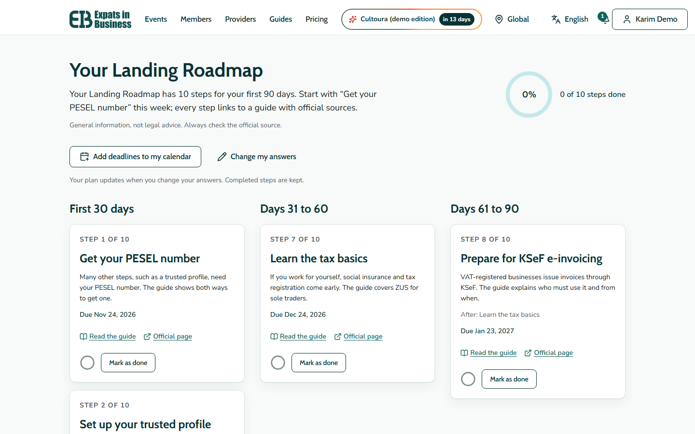
The Landing Roadmap 30/60/90.
Dashboard
Upcoming sessions, tickets, connections, notifications and community panels. Each stat card navigates somewhere real (this was a bug in the old portal and is covered by a test).
Onboarding
Each step saves on its own, so a member can stop and return. Goals and languages shape what they see next.
Landing Roadmap
A personal settling-in plan for the first 30, 60 and 90 days, generated from the member's residence situation: tasks, deadlines, reminders by email, and a calendar export. Roadmap emails are sent by a daily job that never repeats a reminder.
Notifications and settings
Profile, account, extra verified emails, privacy, billing. Members can export their data and ask for deletion (effective after 30 days, cancellable).
Expats in Business · platform guide11
10 · Growth
Chapters, ambassadors, careers, volunteering
The chapters world view: live chapters and cities members can vote for.
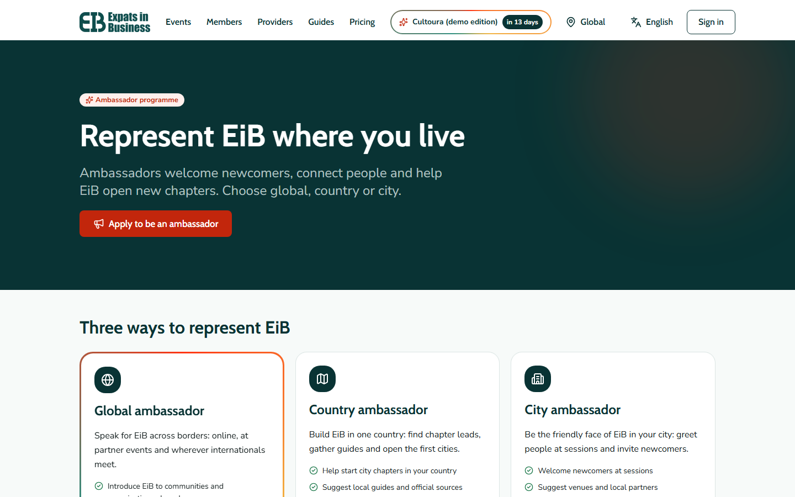
The ambassador programme: global, country and city tiers.
Chapters and votes
A world view of live and launching chapters. Members can vote for the next city; country hub and city pages show sessions, festivals, ambassadors and member counts.
Ambassadors
Three tiers. Members apply, admins review, accepted ambassadors appear publicly (they can hide or withdraw). Benefits are placeholders until EiB decides.
Careers and volunteering
Open roles and a volunteer page with an application per role, reviewed on the admin Applications board.
The country and city pages read from a tagged cache, and decisions on ambassadors or votes refresh it immediately, so pages are fast and still correct.
Expats in Business · platform guide12
11 · Membership and the business model
Members never pay to belong
The pricing page. All prices are placeholders ("proposal") until EiB approves them in the admin catalogs.
The north-star metric is confirmed connections per month. Anything that taxes connecting works against it, so money comes from people who get commercial value out of a large, verified international community.
Who pays
For what
Members who want more
Member Plus (concierge, priority, early access)
Founders and small businesses
Business listing, lead inbox, featured in their Bubble
Paid session and festival tickets; stalls for vendors
Sponsors and partners
Event and festival partnerships with a signed report
Sequencing proposed in the business model
Now: free core, festival tickets and stalls, sponsor reports (no pricing risk)
Next: Verified Provider and Business plans in Kraków
Then: Member Plus, and Corporate once two or three employers ask
Decisions only EiB can make: approve or change every proposed price; sponsorship packages and logo permissions; stall fee and refund policy; the legal entity that sells tickets and issues invoices (needed before Stripe live mode).
Expats in Business · platform guide13
12 · The Team page and the admin centre
People behind EiB, edited by EiB
The public Team page (placeholders shown: "Demo profile").
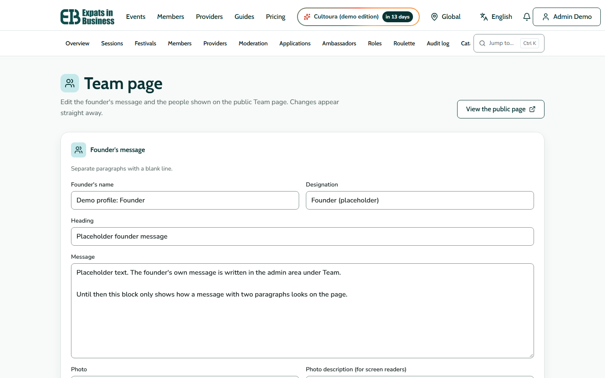
The admin editor: message, photo, people.
What admins can edit
The founder's message: heading, text, name, designation, photo
Each person: name, designation, group, short bio, time with EiB, LinkedIn, email, photo and its description
Show or hide a person, set the order, delete
Built with care
Photos are re-encoded as small WebP images (EXIF location data removed); non-images are rejected
An email appears only if the person consented, and only when a visitor presses "Show email address" (not in the page source)
LinkedIn links must be https and on linkedin.com; every change is audited
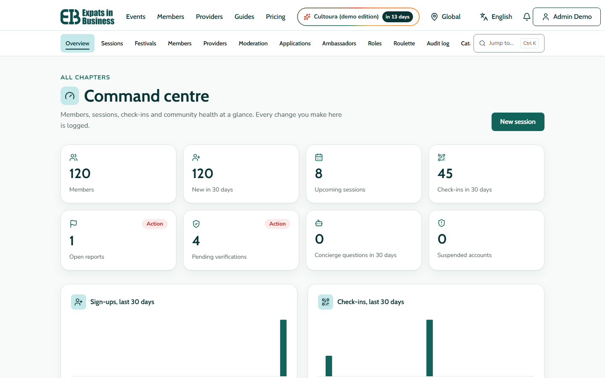
The admin command centre: KPIs, charts and chapter health.
Expats in Business · platform guide14
12 · The admin centre
Everything an organiser needs, audited
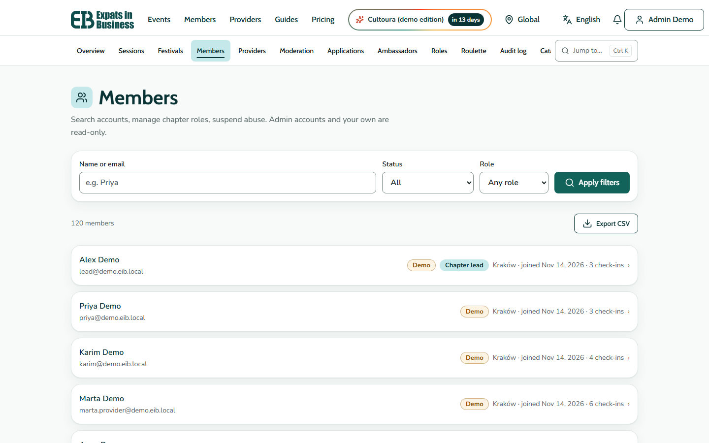
Members: search, filters, CSV export.Settings: feature flags and the site banner.
Section
What it does
Overview
8 KPIs, sign-up and check-in charts, chapter health
Sessions, Festivals
Builders and consoles, check-in, Pulse, attendee export
Members, Roles
Search, export, suspend; grant and revoke roles per chapter
Providers
Verification queue with a checklist
Moderation, Applications
Reports queue; speaker, story, contributor, volunteer and stall boards
Ambassadors, Roulette
Review applications; draw and inspect weekly rounds
Catalogs
Event formats, provider categories, plan prices, with no deploy
Team
The Team page editor
Settings, System
Feature flags, banner, health and job status
Audit log
Who did what, when, to which record (no personal data in details)
A command palette (Ctrl K) jumps to any section. Chapter leads see only their own chapter; global sections are admin-only and guarded on the server.
Expats in Business · platform guide15
13 · Languages, SEO, privacy and brand
Built for people everywhere
Languages
English, Polish and Ukrainian, with about {{keys}} translated strings per language. Dates, money and time zones follow the chapter. Polish and Ukrainian are machine-translated and need review by native speakers.
Search and sharing
hreflang alternates, JSON-LD structured data, social cards, a sitemap and a robots file that keeps private areas out of search.
Privacy (GDPR)
Consent before non-essential cookies
Data export and deletion from settings
Aggregates under 5 people are hidden
No personal data is ever sent to an AI model
Accessibility
Semantic HTML, labels, visible focus, 44 px touch targets, no colour-only meaning, reduced-motion support. Every text and background pair is listed in a contrast table that a test enforces at 4.5:1 (3:1 for borders and focus).
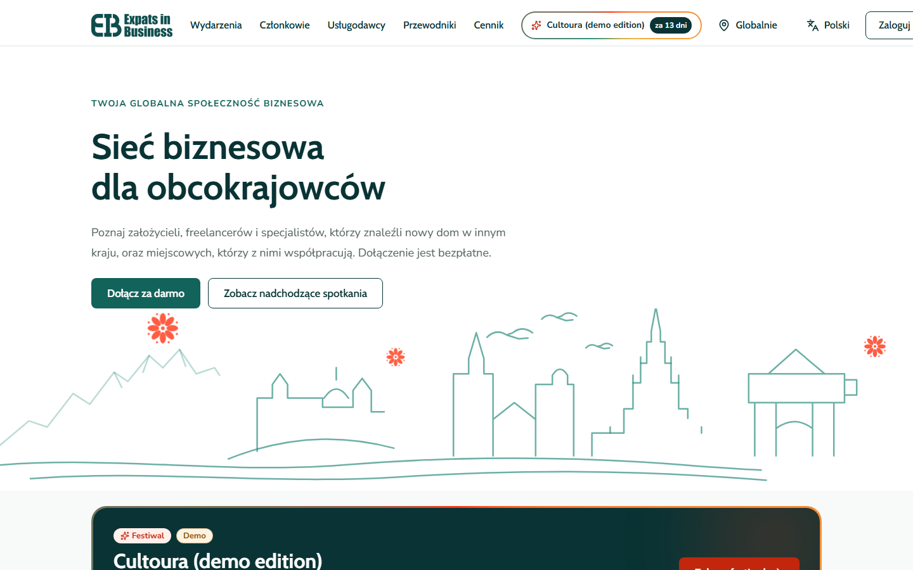
The home page in Polish (/pl).
Brand
Deep Teal #093334
Logo teal #074C4C
EiB Green #12635A
Tint #C5E8EB
Headings use Cabin (sentence case); body text uses Nunito Sans. Ember (#FF3514 / #C2260C) is used sparingly for one highlight button. Tone: warm, inclusive, concrete; always date, time, venue and price. Motion is limited to transform and opacity, under 600 ms, with reduced-motion fallbacks.
Expats in Business · platform guide16
14 · Architecture
How it is built
Browser · Server Components by default, small client islands (forms, map, QR scanner)
Plan before coding; small reviewable steps; Conventional Commits
Never invent company facts; legal statements cite official sources
Nothing hard-codes a city, currency, time zone or language
Money is integer minor units plus a currency; times stored in UTC, shown in the chapter's zone
Every clickable element works; no empty pages
Server Components by default; strings only through next-intl; files under 250 lines
No colour literals in components (a test scans); every colour pair passes contrast
Secrets never committed; environment validated with Zod at startup
Finish each task with npm run check and a progress-log entry
Folder map
app/[locale]/(public|member|provider|admin|tools) pages by audience
app/api routes for outside callers only
components/ lib/ server/actions/ config/ UI, logic, writes, swappable values
prisma/ (schema, {{migrations}} migrations, seed base + demo) content/ (guides, legal) messages/ (en, pl, uk)
tests/unit tests/e2e scripts/ docs/
Expats in Business · platform guide18
16 · Security
Security and abuse protection
Access control
Roles checked on the server for every action and page
The database row is reloaded and permissions re-checked; hidden form fields are never trusted
Anonymous or wrong-role access gets a sign-in prompt or a styled 403, and no personal data is in the response ({{access_total}} checks, all passing)
Input and output
Zod validation on every action; ids validated
Uploads decoded and re-encoded; size and type limited
Reflected-input probes found no unescaped output
Abuse limits
Per-account, layered limits (burst plus daily) for posts, reactions, reports, applications, billing, reviews, admin and account writes
Limits live in Postgres, so they hold across servers and restarts
Sign-in is rate-limited per IP
Platform
Content Security Policy, frame denial, no-sniff, strict referrer policy, COOP and CORP headers; HSTS on HTTPS
Stripe webhooks signature-verified; client amounts never trusted
Secrets validated at startup; test keys only
Privacy by design
No personal data reaches an AI model: prompts contain only the question and retrieved guide passages
Profile fields are opt-in per field; connection contact details appear only after acceptance; team emails only with consent
Aggregates below 5 people are hidden in reports and analytics
Data export and deletion are self-service; admin actions are audited without personal data in the details
Honest limits. The Content Security Policy allows inline scripts, because streaming rendering cannot use per-request nonces; the protection against script injection therefore rests on output encoding, which the probes confirmed. Stripe is test-only. Legal texts need a lawyer. The licence needs legal review.
Expats in Business · platform guide19
17 · Testing and quality
How it was tested, and what the results were
{{unit}}unit tests passing
{{e2e_desktop}}browser tests, each run at desktop and 375 px
{{crawl_pages}}pages followed by the link crawler, 0 broken
{{access_pass}}/{{access_total}}access-control and security probes passed
Layer
What it checks
Static
ESLint, strict TypeScript, Prettier; a scan forbids colour literals and the bare cn package
Unit
Permissions, capacity and waitlist rules, money, time zones, env parsing, message-catalogue parity (en, pl, uk), contrast pairs, team schemas, concierge gate
End to end
Real browser flows: sign-in, RSVP and QR ticket, waitlist promotion, check-in, Pulse, festivals, community, moderation, admin, team editor, pricing, i18n, concierge
Accessibility
axe-core (WCAG 2 A and AA) inside the browser tests on key pages in every language, plus keyboard and reduced-motion checks
Link crawler
Follows every nav and footer link; every button must do something
Route sweep
A script visits every route as the right persona at both widths (scripts/qa-sweep.mjs). A first run was stopped early to save time on the development laptop; a complete run is the next step
Security probes
Headers, anonymous API access, methods, traversal, reflected input, rate limits
Performance
Lighthouse mobile on key pages
Result summary. {{result_sentence}} The full, itemised report (every route, every finding, with severity) is docs/TEST_REPORT.md.
Findings are reported, not hidden
{{findings_sentence}}
Expats in Business · platform guide20
17 · Quality
Performance and accessibility scores
Lighthouse, mobile profile, production build. Targets are 90 or more in every category.
{{lighthouse_table}}
{{lighthouse_note}}
Design choices that keep it fast
Server Components and streaming: pages show their frame immediately and fill data inside Suspense
Tagged caching: chapter, country, festival and team data are cached and refreshed by the exact action that changes them
CSS keyframes for entrance animation on public pages, so JavaScript stays small; Motion loads only on pages that use it
SVG maps, local embeddings, self-hosted fonts: no third-party trackers or tile services
Team photos are resized to 640 px WebP and cached for a year under a versioned URL
Expats in Business · platform guide21
18 · Going live
Deployment, roadmap and open decisions
Free deployment path (full guide: docs/DEPLOY.md)
1 Database Neon free Postgres with pgvector
→
2 Prepare migrate, base seed, embed guides
→
3 Email Brevo SMTP (300 a day free)
→
4 App Render web service
→
5 Admin and jobs first admin, GitHub cron
Free plans sleep when idle (the first visit after a pause can take about a minute) and have storage limits; the guide lists them with sources. A paid instance removes the pause for launch events. A public site must run with demo mode off and only the base seed.
Roadmap
MVP · this build
All features above, demo data, local and free-tier ready.
V1 · paid pilot in Kraków
Real prices, entity, refund policy, legal review, verified providers and Business plans.
V2 · Poland, then global
Warsaw live, more chapters, Member Plus and Corporate, native-reviewed languages.
Open items (known gaps)
Item
Owner
Approve prices and plans; sponsorship packages; stall fees
EiB
Refund policy; legal entity for tickets and invoices; Stripe live mode
EiB and a lawyer
Review privacy, terms and cookie texts; review the licence
Lawyer
Native review of Polish and Ukrainian
EiB volunteers
Real founder message, team, photos, partner logos (with permission)
EiB, entered in the admin area
Vector logo source; real EiB event photos
EiB
Hosting choice and domain; production monitoring
EiB and developers
Expats in Business · platform guide22
Appendix A · For developers
Run it, test it, change it
git clone <private repository> && cd eib-platform
npm run setup # install, Docker (Postgres + Mailpit), migrate, seed, embed guides
npm run dev # http://localhost:3000 emails: http://localhost:8025
npm run check # lint + typecheck + unit tests (before every commit)
npm run build && npm start # production build (use this for demos)
npm run e2e # Playwright with axe and link crawler (needs the database)
npm run lighthouse # performance audit of a running production server
npm run demo:reset # restore the demo data
Demo accounts (demo mode only)
Role
Email
Admin
admin@demo.eib.local
Chapter lead
lead@demo.eib.local
Member
priya@ and karim@demo.eib.local
Provider
marta.provider@demo.eib.local
Sponsor
sponsor@demo.eib.local
The shared demo password is in the README. Never deploy a public site in demo mode.
Key environment variables
Variable
Purpose
DATABASE_URL
Postgres with pgvector
APP_URL, BETTER_AUTH_URL
Public address (must match)
BETTER_AUTH_SECRET
32+ random characters
SMTP_*, EMAIL_FROM
Email delivery
AI_PROVIDER
demo, groq, gemini, openrouter, anthropic
FEATURE_*
Feature flag defaults
TRUSTED_PROXY_HOPS
1 behind one proxy
Useful scripts
npm run admin:grant -- email first admin · npm run jobs -- reminders|roulette scheduled jobs · npm run crawl link crawler · npm run db:seed -- --base-only production seed · node scripts/qa-sweep.mjs route sweep · node scripts/capture-screenshots.mjs screenshots.
Expats in Business · platform guide23
Appendix B · Route map
Every page in the product
Public
Home · Events · Event formats · Event page · Festivals · Festival page · Chapters · Chapter · Country hub · Bubbles · Bubble · Guides · Guide · Members · Member · Providers · Provider · Verification criteria · Businesses · Pricing · Corporate pricing · Ambassadors · Careers · Role · Volunteer · Get involved · Team · Help · Concierge · Privacy · Terms · Cookies · Sign in · Sponsor report
Member
Dashboard · Onboarding · Roadmap · Coffee Roulette · Community · Group · Connections · Who I met · Notifications · My events · My businesses · Ticket · Settings (profile, account, email, privacy, billing)
Provider
Inbox · Analytics
Admin
Command centre · Sessions · New session · Check-in · Pulse · Festivals · Festival console · Members · Providers · Provider review · Moderation · Applications · Ambassadors · Roles · Roulette · Audit log · Catalogs · Team · Settings · System
Developer
Styleguide (development and demo mode only)
API routes (for outside callers only)
Authentication · Stripe webhook · Concierge stream · Session Pulse (SSE) · Check-in · Calendar files (sessions, roadmap) · Email verification · Account and admin exports · Festival attendees export · Team photo · Team email reveal · Health
Glossary
Chapter
A city community with its own sessions, lead, time zone and currency
Bubble
A group by country of origin, led by a Bubble Lead, across all chapters
Pulse
The live arrivals screen at a session
Concierge
The AI assistant that answers only from cited guides
Entitlement
A feature unlocked by a paid plan, separate from a role
Demo data
Fictional records flagged isDemo, removable in one command
Feature flag
A switch an admin flips without a deploy
Expats in Business · platform guide24
Now open the real product.
Start with the home page, then try the paths in docs/DEMO_SCRIPT.md: reserve a place, ask the concierge, open the admin centre and edit the Team page.